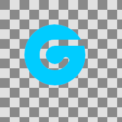

Fill Path
Renders a filled region
Color
Color of paint to use for filling.
name: color
type: color
default: rgb(0.0000, 0.0000, 0.0000)
Opacity
The fill opacity to use.
name: opacity
type: double
default: 1.00
minimum: -2.00
maximum: 2.00
ui-minimum: -2.00
ui-maximum: 2.00
ui-gamma: 1.00
ui-step-small: 0.00
ui-step-big: 0.10
ui-digits: 3
Fill rule.
how to determine what to fill (nonzero|evenodd)
name: fill-rule
type: string
default: nonzero
Transform
svg style description of transform.
name: transform
type: string
default:
Vector
A GeglVector representing the path of the stroke
name: d
type: path
pads: input output
parent-class: GeglOperationFilter
categories: render vector
source: operations/external/vector-fill.c
 This page is part of the online GEGL Documentation, GEGL is a data flow based image processing library/framework, made to fuel GIMPs high-bit depth non-destructive editing future.
This page is part of the online GEGL Documentation, GEGL is a data flow based image processing library/framework, made to fuel GIMPs high-bit depth non-destructive editing future.